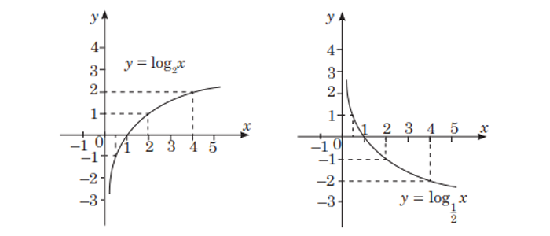

Logarifmik funksiýa :
Kesgitleme: y = logax görnüşli funksiýa (bu ýerde a > 0
we a ≠ 1) logarifmik funksiýa diýilýär.

Logarifmik funksiýanyň esasy häsiýetleri:
1. Logarifmik funksiýanyň kesgitleniş ýaýlasy ähli položitel hakyky sanlaryň köplügidir. Ýagny D(loga x) = R+ .
2. Logarifmik funksiýanyň bahalar ýaýlasy ähli hakyky sanlaryň köplügidir. Ýagny E(loga x) = R.
3. y = logax logarifmik funksiýa kesgitleniş ýaýlasynyň ähli ýerinde a > 1 bolanda artýar, 0 < a < 1 bolanda bolsa kemelýär.
4. a > 1 bolanda (y = logax artýan funksiýa bolup, loga1 = 0
bolanlygyna görä) y = logax funksiýa, 0 < x < 1 bolanda otrisatel we x > 1 bolanda položitel bahalary kabul edýär.
0 < a < 1 bolanda (y = logax kemelýän funksiýa we loga1 = 0 bolanlygyna görä), y = logax funksiýa 0 < x < 1
bolanda položitel, x > 1 bolanda otrisatel bahalary kabul edýär.
5. loga1 = 0 deňlikden islendik logarifmik funksiýanyň grafiginiň (1; 0) nokat arkaly geçýänligi gelip çykýar.
Logarifmik deňlemeler:
y = logax funksiýa (0; ∞) aralykda artýar (ýa-da kemelýär) we bu aralykda ähli hakyky san bahalary kabul edýär. Şoňa görä-de
b-niň islendik bahasynda logax = b deňlemäniň bir we diňe bir köki bardyr. Sanyň logarifminiň kesgitlemesinden, ol köküň ab
deňligi gelip çykýar.
Çylşyrymly logarifmik deňlemeler çözülende bu deňleme käbir özgertmeler arkaly logax = b görnüşe getirilýär.